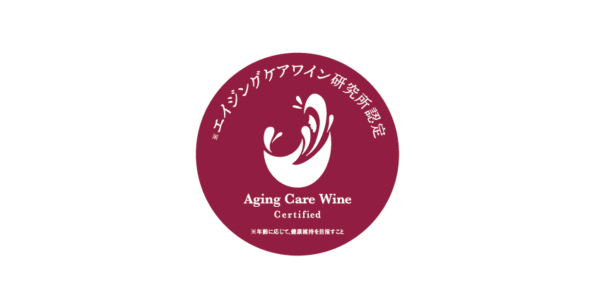

エイジングケアワイン認定について

エイジングケアとは年齢に応じて、健康維持を目指すこと。ここではワインによる糖化ケア作用※を指します。エイジングケアワイン研究所では老化物質AGEsの生成を抑える作用が認められ、糖化の抑制に役立つ可能性のあるワインを「エイジングケアワイン」と称することとしました。
ワインによる糖化ケア作用の程度は銘柄により異なります。研究所では、ワインの糖化ケア作用を定量化する実験系を確立し、所定の基準をクリアしたワインを「エイジングケアワイン」として認定しています。
※糖化ケア・・・今の若さや美しさを維持すること